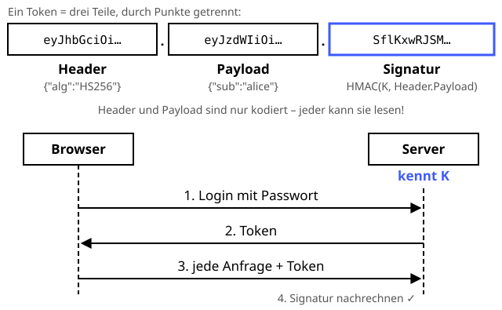

JSON Web Token (JWT)
Der Stempel auf der Eintrittskarte – wer daran herumkritzelt, fliegt raus.
Definition
Ein JSON Web Token (RFC 7519) ist ein kompaktes, signiertes Ticket. Nach dem Login stellt der Server ein Token aus, und der Browser schickt es bei jeder weiteren Anfrage mit. Es besteht aus drei Teilen, getrennt durch Punkte: Header, Payload (die Angaben, z. B. Nutzername und Ablaufzeit) und Signatur. An der Signatur erkennt der Server, dass er das Token selbst ausgestellt hat und dass niemand die Angaben verändert hat.
Zutaten
- Header, z. B.
{"alg":"HS256","typ":"JWT"} - Payload mit Angaben, z. B.
{"sub":"alice","admin":false} - Geheimer Server-Schlüssel (bei HS256)
- HMAC oder eine digitale Signatur
- Base64url-Kodierung
Zubereitung
- Der Nutzer meldet sich mit seinem Passwort an.
- Der Server schreibt Header und Payload als JSON und kodiert beide mit Base64url.
- Der Server berechnet
Signatur = HMAC-SHA256(Schlüssel, Header + "." + Payload). - Das Token
Header.Payload.Signaturgeht an den Browser. - Der Browser schickt das Token bei jeder Anfrage mit (
Authorization: Bearer …). - Der Server rechnet die Signatur nach und prüft die Ablaufzeit – erst dann glaubt er der Payload.
Skizze

Header und Payload kann jeder lesen. Nur die Signatur ist mit dem geheimen Schlüssel K (blau) gemacht – und die kann nur der Server berechnen.
Skizze erstellt von Claude (KI)
Demo
Platzhalter für die Demo
Tipps
- Die Payload ist nur kodiert, nicht verschlüsselt – jeder kann sie lesen. Also keine Geheimnisse hineinschreiben.
- Den Algorithmus auf dem Server fest vorgeben. Tokens mit
"alg":"none"niemals akzeptieren – das war eine berühmte Sicherheitslücke. - Kurze Ablaufzeiten setzen (Feld
exp), sonst ist ein gestohlenes Token lange gültig. - Für HS256 einen langen, zufälligen Schlüssel nehmen – kurze Schlüssel lassen sich mit dem Token offline erraten.